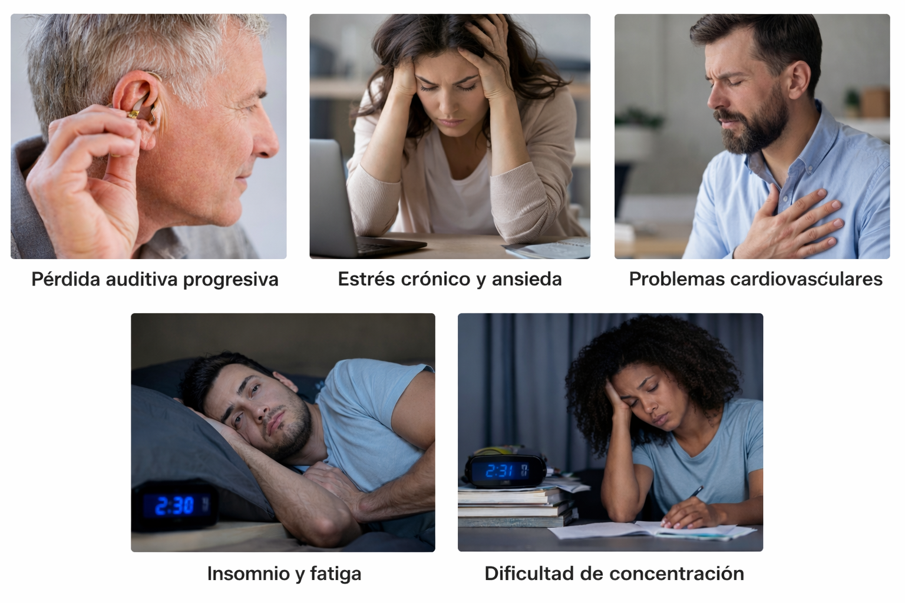

República Dominicana
La Ley 287-04 es una normativa de la República Dominicana orientada a regular los niveles de ruido en los espacios públicos y privados. Su objetivo principal es prevenir, controlar y sancionar la contaminación acústica que afecta tanto a la salud humana como al equilibrio del medio ambiente.
Esta ley surge como respuesta al crecimiento urbano, el aumento del tránsito vehicular y las actividades comerciales que generan niveles de ruido superiores a los permitidos, afectando la calidad de vida de la población.
La Ley 287-04 tiene como finalidad principal regular la contaminación acústica en la República Dominicana, estableciendo normas que garanticen el bienestar de la población y la protección del medio ambiente. Sus objetivos buscan no solo controlar el ruido, sino también fomentar una cultura de respeto y convivencia social.
La ley establece límites específicos de ruido dependiendo de la zona (residencial, comercial o industrial) y del horario (día o noche). Esto permite controlar las actividades que generan sonidos excesivos, evitando molestias a la comunidad.
Uno de los principales objetivos es prevenir los efectos negativos del ruido en la salud, como el estrés, la ansiedad, el insomnio y problemas auditivos. Al controlar el ruido, se promueve una mejor calidad de vida para los ciudadanos.
La ley busca reducir el ruido como forma de contaminación ambiental, al igual que se controla la contaminación del aire o del agua. Esto ayuda a mantener un entorno más saludable y equilibrado.
Para garantizar el cumplimiento de la ley, se establecen sanciones como multas, cierre de negocios o confiscación de equipos. Estas medidas buscan evitar que las personas o empresas generen ruidos excesivos sin consecuencias.
La ley también fomenta la concienciación ciudadana sobre los efectos del ruido. A través de la educación, se busca que las personas comprendan la importancia de respetar los niveles de sonido y contribuir a una convivencia más armoniosa.
En conjunto, estos objetivos permiten no solo controlar el ruido, sino también crear una sociedad más consciente, respetuosa y comprometida con el bienestar común.
El control del ruido es fundamental para garantizar una vida saludable. La exposición constante a ruidos elevados puede afectar negativamente a las personas, incluso si no se percibe de inmediato.
La aplicación de la Ley 287-04 está a cargo de varias instituciones del Estado dominicano, las cuales trabajan en conjunto para garantizar su cumplimiento:

La contaminación acústica tiene efectos directos sobre la salud de las personas. Entre los principales impactos se encuentran:
La contaminación acústica no solo afecta a los seres humanos, sino también a la fauna y a los ecosistemas en general. Muchos animales dependen del sonido para sobrevivir, ya sea para comunicarse, orientarse o detectar peligros. Cuando hay exceso de ruido, estas funciones se ven alteradas, generando consecuencias negativas en el equilibrio natural.
El ruido intenso puede interferir con la capacidad de los animales para orientarse en su entorno. Especies como aves y murciélagos utilizan el sonido para ubicarse, por lo que el ruido puede hacer que pierdan su rumbo, afectando su supervivencia.
Cuando el ruido cambia el comportamiento de ciertas especies, también altera la dinámica de todo el ecosistema. Por ejemplo, si los depredadores o presas modifican sus hábitos, se puede romper el equilibrio natural entre las especies.
El ruido constante puede afectar los ciclos de reproducción, migración y alimentación de los animales. Esto puede provocar una disminución en la población de algunas especies y afectar la biodiversidad.
El ruido es una forma de contaminación invisible pero muy peligrosa, ya que impacta directamente en la estabilidad de los ecosistemas y en la conservación de la vida silvestre.
El incumplimiento de la Ley 287-04 puede generar sanciones como multas, cierre de establecimientos o decomiso de equipos que generen ruido excesivo.
Estas medidas buscan garantizar el respeto a la ley y proteger el bienestar colectivo.
El respeto a los niveles de ruido no es solo una obligación legal, sino también un compromiso social. Cumplir con la Ley 287-04 contribuye a una mejor convivencia, protege la salud y promueve un ambiente más sano para todos.